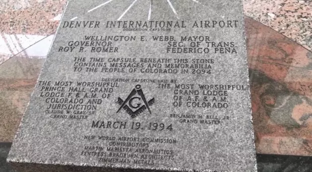
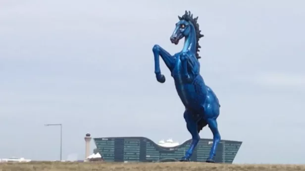
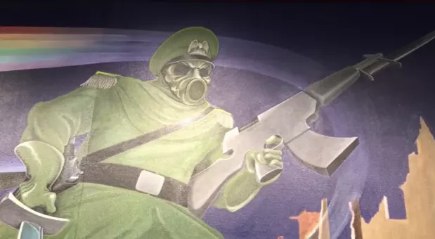

History
Denver Airport is an international airport that opened February 28, 1995. The airports construction was 16 months behind schedule and went $2 billion over budget.
Conspiracy
Some people think the airport has a network of underground bunkers, which is why it took so long to finish construction. A former airport construction worker claimed the reason the airport was so behind was because five multistory buildings were built beneath the airport. He also said that there was a complex network of tunnels underneath.
The airport also consists of many creepy murals and statues. The creepy list consists of:

The airport’s dedication stone displays the Masonic symbol of a compass with a capital G inside and underneath the symbol is “New World Airport Commision”, the first part, “New World”, the name of a secret society (possibly Illuminati).

The devilish mustang horse statue outside the airport, nicknamed “Blucier” by theorists, is said to represent the Fourth Horseman of the Apocalypse from the biblical book of Revelations. The Fourth Horseman represents Death.

Many murals around the airport showcase creepy pictures of Nazies and family.